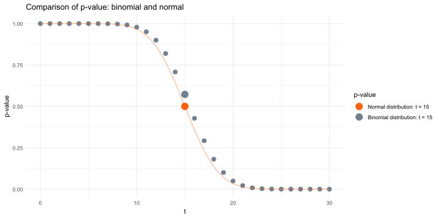

If the total value of \(\rightarrow\) grows, the average value grows. Therefore, this task can be reformulated as the growth of the average check, or ARPU.
Increase in the number of purchases.
Reducing the outflow of users.
Next, to derive all the criteria, we need a normal distribution. Because this is the distribution that the mean of the samples follows.
Normal Distribution
Normal distribution\(\xi \sim \mathcal{N}(\mu, \sigma^2)\) is a continuous distribution in which the density decreases with increasing distance from \(\mu\) exponentially.
Random variables can be weakly dependent on each other and slightly differently distributed. The central limit theorem will still be correct.
Visualization of the CLT
Generate \(N\) samples of \(M\) elements in each:
For each sample, calculate the normalized average over \(M\) elements.
As a result, we get a sample of N elements.
It must be from a normal distribution.
Code
visualize_CLT <-function(sample_generator, expected_value, variance) {set.seed(2024) N <-5000 clt_sample <-numeric(N)for (i in1:N) { sample <-sample_generator() sample_size <-length(sample) statistic <-sqrt(sample_size) * (mean(sample) - expected_value) /sqrt(variance) clt_sample[i] <- statistic } x <-seq(-4, 4, length.out =1000) normal_pdf <-dnorm(x, mean =0, sd =1)ggplot() +geom_histogram(aes(x = clt_sample, y = ..density..), bins =50, fill ="steelblue", alpha =0.6) +geom_line(aes(x = x, y = normal_pdf), color ="darkred", size =1) +geom_density(aes(x = clt_sample), color ="darkblue", size =1) +labs(title ="Distribution of average values",x ="X",y ="Density" ) +theme_minimal()}
Visualization of the CLT: binomial distribution
binom_generator <-function(p, n, size) {rbinom(size, size = n, prob = p)}p <-0.01n <-20size <-5000visualize_CLT(sample_generator =function() binom_generator(p = p, n = n, size = size),expected_value = p * n,variance = n * p * (1- p))
😊
binom_generator <-function(p, n, size) {rbinom(size, size = n, prob = p)}p <-0.01n <-20size <-40visualize_CLT(sample_generator =function() binom_generator(p = p, n = n, size = size),expected_value = p * n,variance = n * p * (1- p))
🤨
Visualization of the CLT: exponential distribution
Or in R: p_value <- 1 - pnorm(t, mean = sum_mu, sd = sum_std)
This time, we look at the statistics not at point t-1, as we did before, but at point t. Since we have a continuous distribution, we do not need to subtract 1:
in the case of normal distribution: \(P(T(X^n) \geq t) = P(T(X^n) > t) = 1 - P(T(X^n) \leq t)\);
in the case of binomial distribution: \(P(T(X^n) \geq t) = 1 - P(T(X^n) \leq t - 1)\).
Binomial vs. normal distribution
Binomial vs. normal distribution
get_pvalue_by_normal_approx <-function(n, mu0, t) { sum_mu <- n * mu0 sum_variance <- n * mu0 * (1- mu0) sum_std <-sqrt(sum_variance)1-pnorm(t, mean = sum_mu, sd = sum_std)}normal_dist_p_value <-get_pvalue_by_normal_approx(n, mu0, t)cat("p-value obtained from the normal distribution approximation:", normal_dist_p_value, "\n")
p-value obtained from the normal distribution approximation: 0.07206352
n <-3000mu0 <-0.5t <-1544old_p_value <-get_pvalue_by_old_logic(n, mu0, t)cat("p-value obtained using the old, correct formula:", old_p_value, "\n")
p-value obtained using the old, correct formula: 0.05609088
normal_dist_p_value <-get_pvalue_by_normal_approx(n, mu0, t)cat("p-value obtained from the normal distribution approximation:", normal_dist_p_value, "\n")
p-value obtained from the normal distribution approximation: 0.05406527
Fisher’s \(Z\)-test
\(H_0: \mu = \mu_0\ vs.\ H_1: \mu > \mu_0\)
The statistic \(Z(X) = \sqrt{n}\dfrac{\overline X - \mu_0}{\sqrt{\sigma^2}}\)
For a sufficiently large sample size, \(Z(X) \overset{H_0}{\sim} \mathcal{N}(0, 1)\) (according to the CLT)
p-value = \(2\cdot \min \left[{\Phi(z), 1 - \Phi(z)} \right]\), where \(z\) is the realisation of the statistic \(Z(X)\)c
R and Fisher’s \(Z\) test: small sample size
z_criterion_pvalue <-function(sample_mean, sample_size, mu0, variance) { Z_statistic <-sqrt(sample_size) * (sample_mean - mu0) /sqrt(variance)1-pnorm(Z_statistic)}n <-30t <-19mu0 <-0.5variance <- mu0 * (1- mu0)old_p_value <-get_pvalue_by_old_logic(n, mu0, t)normal_p_value <-get_pvalue_by_normal_approx(n, mu0, t)z_pvalue <-z_criterion_pvalue(t / n, n, mu0, variance)cat("p-value obtained using the old, correct formula:", old_p_value, "\n","p-value obtained from the normal distribution:", normal_p_value, "\n","Z-test p-value:", z_pvalue, "\n")
p-value obtained using the old, correct formula: 0.1002442
p-value obtained from the normal distribution: 0.07206352
Z-test p-value: 0.07206352
R and the Fisher’s \(Z\) test: a larger sample
z_criterion_pvalue <-function(sample_mean, sample_size, mu0, variance) { Z_statistic <-sqrt(sample_size) * (sample_mean - mu0) /sqrt(variance)1-pnorm(Z_statistic)}n <-3000t <-1544mu0 <-0.5variance <- mu0 * (1- mu0)old_p_value <-get_pvalue_by_old_logic(n, mu0, t)normal_p_value <-get_pvalue_by_normal_approx(n, mu0, t)z_pvalue <-z_criterion_pvalue(t / n, n, mu0, variance)cat("p-value obtained using the old, correct formula:", old_p_value, "\n","p-value obtained from the normal distribution:", normal_p_value, "\n","Z-test p-value:", z_pvalue, "\n")
p-value obtained using the old, correct formula: 0.05609088
p-value obtained from the normal distribution: 0.05406527
Z-test p-value: 0.05406527
Continuity correction
Is it possible to refine the results of the \(Z\)-test for a binomial distribution with small sample sizes?
\(Z\)-test: \(p\)-value = 0.07
Accurate \(p\)-value = 0.10
First, let’s visualise the p-value(t) function of the criteria described above:
the p-value of the criterion based on the normal approximation
here is a simple formula: you need to implement 1 - pnorm(t)
the p-value of the binomial criterion. Let’s calculate it in 2 cases:
t is a noninteger number.. Let’s look at an example
Let t=19.5. The p-value \(= P(T(X) \geq t) = P(T(X) \geq 19.5) = 1 - P(T(X) < 19.5) =|P(T(X) = 19.5) = 0|= 1 - P(T(X) \leq 19.5)\). Note that the last probability is a distribution function. Therefore.
as well as p-value(t) = 1 - pbinom(t-a, n, mu0) = p-value(t-a), where 0 < a < 1. For example, p-value(19) = p-value(18.9).
Continuity correction
Code
cmp_pvalue_binom_and_norm <-function(n, mu0, t, add_to_x =0) {# Parameters sum_mu <- n * mu0 sum_variance <- n * mu0 * (1- mu0) sum_std <-sqrt(sum_variance) x_axis <-seq(0, n, length.out =1000) dots_to_show <-seq(0, n, by =1)# Plotggplot() +# Binomial p-valuegeom_point(aes(x = dots_to_show, y =1-pbinom(dots_to_show -1, size = n, prob = mu0)),color ="slategray",size =3) +geom_point(aes(x = t, y =1-pbinom(t -1, size = n, prob = mu0), color ="slategray"),size =5) +# Normal p-valuegeom_line(aes(x = x_axis,y =1-pnorm(x_axis + add_to_x, mean = sum_mu, sd = sum_std)),color = red,alpha =0.5) +geom_point(aes(x = t, y =1-pnorm(t + add_to_x, mean = sum_mu, sd = sum_std), color ="red"), size =5) +labs(title ="Comparison of p-value: binomial and normal",x ="t", y ="p-value") +theme_minimal() +scale_colour_manual(name ="p-value", values =c('red'= red, slategray ="slategray"), labels =c("Normal distribution: t = 15", "Binomial distribution: t = 15"))}cmp_pvalue_binom_and_norm(30, 0.5, 15)

\(p_{\text{binom}} > p_{\text{norm}}\)
As the sample size increases, these values coincide.
Continuity correction
n <-20t <-10old_p_value <-get_pvalue_by_old_logic(n, mu0, t)normal_dist_p_value <-get_pvalue_by_normal_approx(n, mu0, t)cat("p-value obtained using the old, correct formula:", old_p_value, "\n","p-value obtained from the normal distribution:", normal_dist_p_value, "\n","Difference:", round(abs(old_p_value - normal_dist_p_value), 3), "\n")
p-value obtained using the old, correct formula: 0.5880985
p-value obtained from the normal distribution: 0.5
Difference: 0.088
# With the growth of tn <-20t <-14old_p_value <-get_pvalue_by_old_logic(n, mu0, t)normal_dist_p_value <-get_pvalue_by_normal_approx(n, mu0, t)cat("p-value obtained using the old, correct formula:", old_p_value, "\n","p-value obtained from the normal distribution:", normal_dist_p_value, "\n","Difference:", round(abs(old_p_value - normal_dist_p_value), 3), "\n")
p-value obtained using the old, correct formula: 0.05765915
p-value obtained from the normal distribution: 0.03681914
Difference: 0.021
# With increasing nn <-200t <-100old_p_value <-get_pvalue_by_old_logic(n, mu0, t)normal_dist_p_value <-get_pvalue_by_normal_approx(n, mu0, t)cat("p-value, отримане за старою, коректною формулою:", old_p_value, "\n","p-value, отримане з наближення нормальним розподілом:", normal_dist_p_value, "\n","Різниця:", round(abs(old_p_value - normal_dist_p_value), 3), "\n")
p-value, отримане за старою, коректною формулою: 0.5281742
p-value, отримане з наближення нормальним розподілом: 0.5
Різниця: 0.028
get_pvalue_by_normal_approx_with_addition <-function(n, mu0, t) { sum_mu <- n * mu0 sum_variance <- n * mu0 * (1- mu0) sum_std <-sqrt(sum_variance)return(1-pnorm(t -0.5, mean = sum_mu, sd = sum_std))}
n <-30mu0 <-0.5t <-19old_p_value <-get_pvalue_by_old_logic(n, mu0, t)normal_dist_p_value <-get_pvalue_by_normal_approx(n, mu0, t)normal_with_add_p_value <-get_pvalue_by_normal_approx_with_addition(n, mu0, t)cat("p-value obtained using the old, correct formula:", old_p_value, "\n","p-value obtained from the normal distribution:", normal_dist_p_value, "\n","p-value obtained from the normal distribution approximation with a correction:", normal_with_add_p_value, "\n")
p-value obtained using the old, correct formula: 0.1002442
p-value obtained from the normal distribution: 0.07206352
p-value obtained from the normal distribution approximation with a correction: 0.1006213